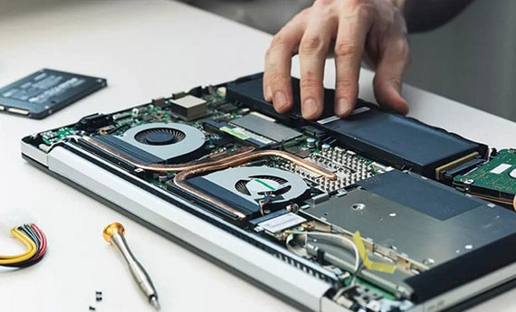

Notebook
Tela, teclado, bateria, SSD e sistema
Diagnóstico para falha de vídeo, superaquecimento, lentidão, teclado, bateria, conector e sistema operacional.
- Limpeza interna e pasta térmica
- Upgrade de SSD e memória
- Troca de tela, teclado e bateria